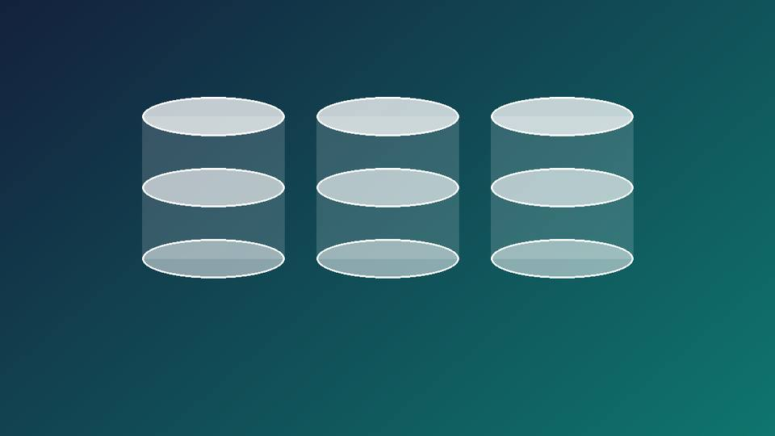

Базы данных в веб-разработке
Как хранить данные сайта: реляционные и нереляционные базы, когда что выбирать и как не потерять данные.

Зачем сайту база данных
Статичная страница хранит содержимое прямо в HTML. Как только появляются пользователи, заказы, комментарии и поиск, данные приходится выносить в отдельное хранилище: браузер отправляет запрос, сервер обращается к базе и собирает ответ.
От выбора базы зависят скорость работы, стоимость поддержки и то, насколько легко менять структуру данных при развитии проекта.
Два больших семейства
SQL
Данные лежат в таблицах со строгой схемой. Связи между таблицами и транзакции гарантируют целостность.
Читать про SQLNoSQL
Документы, пары «ключ-значение», колонки и графы. Гибкая схема и горизонтальное масштабирование.
Читать про NoSQLЧто внутри сайта
- Основы SQL и реляционной модели.
- Виды NoSQL-баз и их применение.
- Сравнительная таблица SQL и NoSQL.
- Проектирование: нормализация и индексы.
- ORM и работа с базой из приложения.
- Безопасность: SQL-инъекции, резервные копии.
- Материалы: видео и частые вопросы.
Где базы данных используются на практике
- Интернет-магазин — товары, заказы и остатки на складе почти всегда хранят в реляционной базе, потому что важна точность и связь между таблицами.
- Социальная сеть — ленту новостей, лайки и переписку часто хранят в NoSQL, потому что нагрузка огромная и структура данных постоянно меняется.
- Банковское приложение — здесь без исключений нужен SQL с полной поддержкой транзакций: ошибка в переводе денег недопустима.
- Поисковая система — использует сразу несколько видов хранилищ: индекс для поиска, кэш для скорости, реляционную базу для учётных данных.
Немного истории
Реляционную модель предложил Эдгар Кодд в 1970 году, и с тех пор она остаётся основой большинства бизнес-приложений. Термин NoSQL стал массово использоваться в конце 2000-х, когда крупным сайтам вроде Google, Amazon и Facebook понадобилось хранить данные объёмом, с которым классическим базам было тяжело справляться.